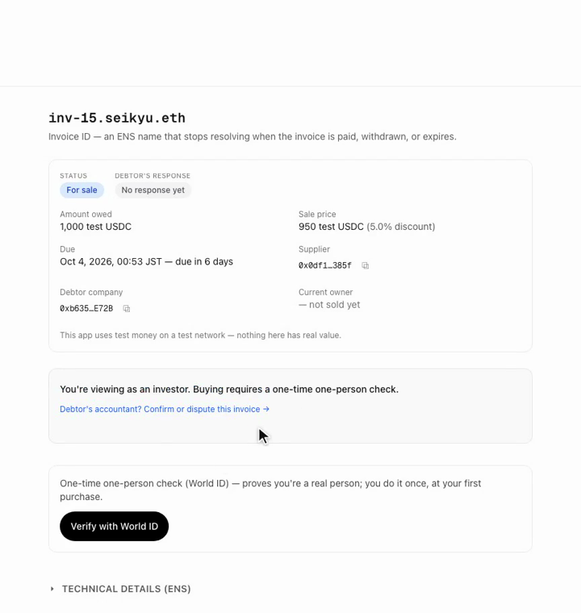
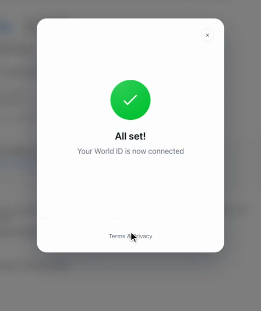

The solution
Anyone can buy an invoice — once they prove they are one person
- Each invoice becomes an ENS name anyone can read, confirmed on-chain by the debtor's own accountant · each buyer clears World ID once, and that human is capped at three open invoices

Step 2 — Buy
The client opens IDKit before checkout
IDKitRequestWidget, IDKit 4.3- Preset: Proof of Human, legacy v3 allowed
- Passport is the credential we designed around


On success
One nullifier, one wallet, forever
- Operator wallet relays
setVerified(investor, nullifier)on-chain - The nullifier binds permanently to the first wallet that uses it
- Cap of 3 open invoices lives in the ERC-721
_updatehook, not the UI
